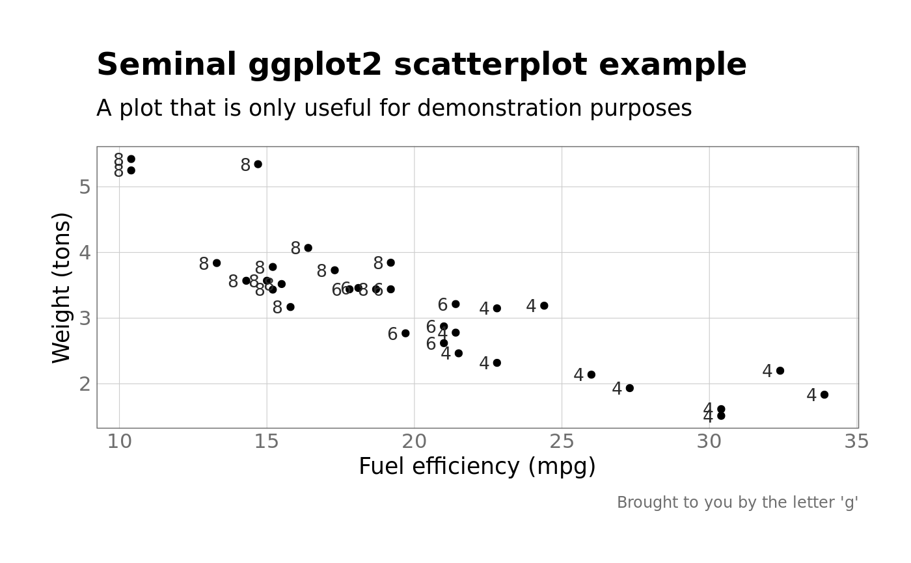
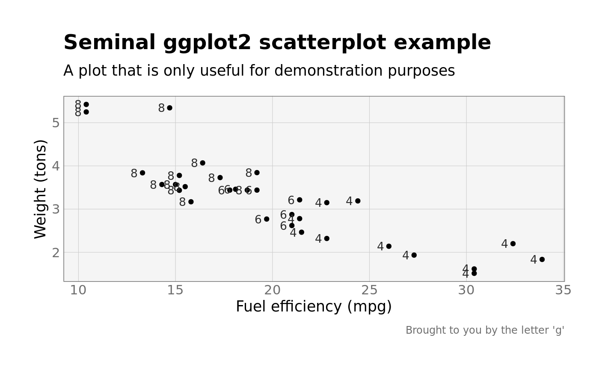

A clean theme based on hrbrthemes::theme_ispum() that uses
Overpass, a free Google Font
that resembles Freeway, the (proprietary) font chosen by MCC branding. This
theme works best when set globally using ggplot2::theme_set() as it will
automatically download and register the correct fonts from Google Font using
sysfonts and showtext (if installed) and will change the default
ggplot2::geom_text() related fonts as well. For an alternative look that I
prefer, use theme_grk(), which simply uses "Fira Sans" as the base font.
theme_moffitt(base_family = "Overpass", axis_text_family = "Overpass Mono", axis_title_family = base_family, axis_title_bold = FALSE, axis_title_just = "cc", axis_title_size = 13, subtitle_size = 13, default_geom_font = "Fira Sans Condensed", default_geom_color = grkmisc::moffitt_colors$blue, axis_text_color = "#6e6e6e", plot_caption_color = axis_text_color, panel_border_color = axis_text_color, panel_background_color = "#FFFFFF", ..., use_showtext = TRUE, panel_grid = c("major", "minor", "both", "none")) theme_grk(base_family = "PT Sans", axis_text_family = "PT Mono", axis_title_family = base_family, axis_title_bold = FALSE, axis_title_just = "cc", axis_title_size = 13, subtitle_size = 13, default_geom_font = "PT Sans Narrow", default_geom_color = grkmisc::moffitt_colors$blue, axis_text_color = "#6e6e6e", plot_caption_color = axis_text_color, panel_border_color = axis_text_color, panel_background_color = "grey96", ..., use_showtext = TRUE, panel_grid = c("major", "minor", "both", "none"))
| base_family | base font family and size |
|---|---|
| axis_text_family | The font family for axis ticks text labels. Passed to
|
| axis_title_family | axis title font family, face and size |
| axis_title_bold | If |
| axis_title_just | axis title font justification, one of |
| axis_title_size | axis title font family, face and size |
| subtitle_size | plot subtitle family, face and size |
| default_geom_font | Change the default ggplot2 geom fonts to the specified font. The default is "Fira Sans Condensed", which tends to look good in constrained space. |
| default_geom_color | Changes default colors of bars and points to the
value given. Set to |
| axis_text_color | Color of axis text |
| plot_caption_color | Color of the plot caption text, or |
| panel_border_color | Color of the panel border, or |
| panel_background_color | Color of the panel background, or |
| ... | Arguments passed on to
|
| use_showtext | Should showtext and sysfonts be used to
register font families from Google? Default is |
| panel_grid | One of "major", "minor", "both", or "none" |
# NOT RUN { theme_set(theme_moffitt()) theme_set(theme_grk()) # Set base theme without changing geom defaults theme_set(theme_moffitt(default_geom_font = NULL, default_geom_color = NULL)) # }library(ggplot2) g <- ggplot(mtcars, aes(mpg, wt)) + geom_point() + geom_text(aes(label = cyl), vjust = 0.5, hjust = 1.65) + labs(x = "Fuel efficiency (mpg)", y = "Weight (tons)", title = "Seminal ggplot2 scatterplot example", subtitle = "A plot that is only useful for demonstration purposes", caption = "Brought to you by the letter 'g'") g + theme_moffitt()g + theme_moffitt(default_geom_color = moffitt_colors$green)g + theme_grk()